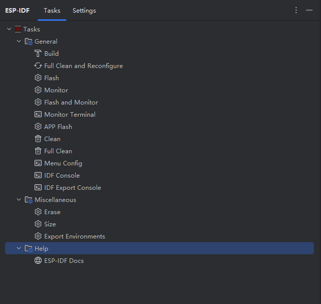
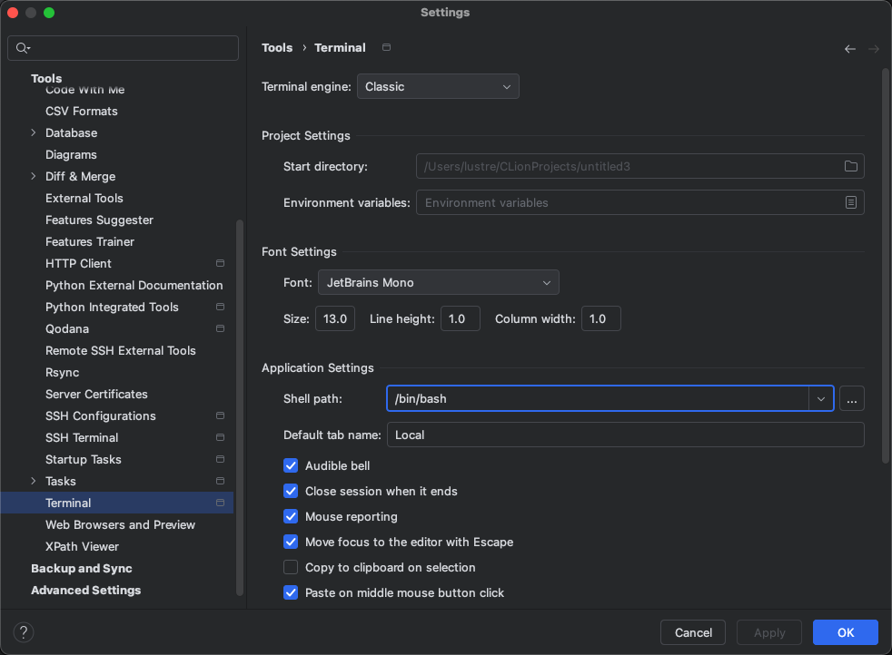

快捷命令树

双击树上节点可以创建对应任务运行。
快捷命令树会在任意的项目中保留，正常情况是给ESP-IDF项目使用。
自定义任务
自定义任务通过项目根目录下的 esp_custom_tasks.xml 定义，可与内置任务一起在任务树中展示、执行，支持 idf.py 命令、 idf.py 终端命令以及本地命令（exec ），并可通过变量组 profile 复用拓展环境变量与替换宏。
新建的项目并无自定义任务，首次使用可按模板创建。
详细的任务类型、标签属性、变量组与 xsd 说明见 自定义任务。
注意事项
IDF Export Console会使用原来的export脚本，将环境变量导入当前会话，比本插件直接对比环境变量差异追加的环境变量更加全面。例如espefuse.py在IDF Console中无法使用，建议使用IDF Export Console.在CLion的终端里面的使用MenuConfig 中使用ESC默认行为是上方编辑器获取焦点。
从而使得ESC不可操作Menuconfig。 建议移除终端的ESC按键将焦点切换到编辑器功能
进入Settings ->keymap -> Plugins | Terminal | Switch Focus To Editor 中文版本是 设置->按键映射->插件 | Terminal | 将焦点切换到编辑器
环境变量中可能含不能被shell处理的字符，在powershell中本插件会自动加上引号但不能应对所有情况，而linux与macos将使用clion提供的api自动完成环境变量导出， 可能在shell上出现不符合语法的字符串会导致命令截断，目前会主动去除这两个变量
IDF_PY_COMP_WORDBREAKSCOMP_WORDBREAKS。MacOS下终端类型任务命令截断
由于最近clion252终端已经重构，在不同版本行为可以与编写文档时测试行为不一致，可以尝试切换经典终端和新终端进行验证。
